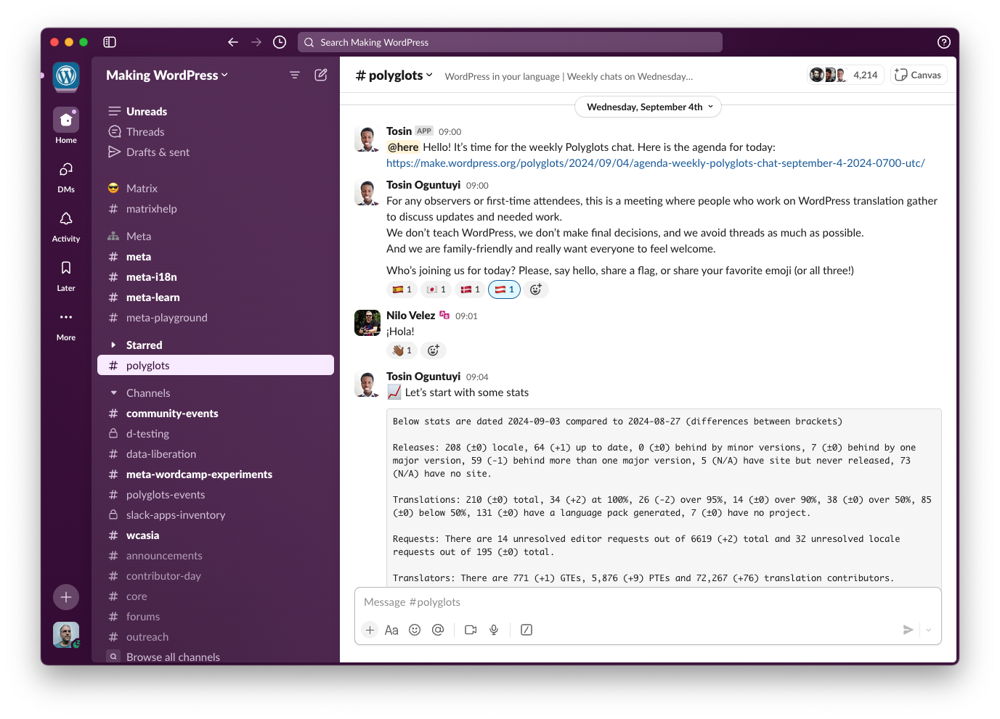
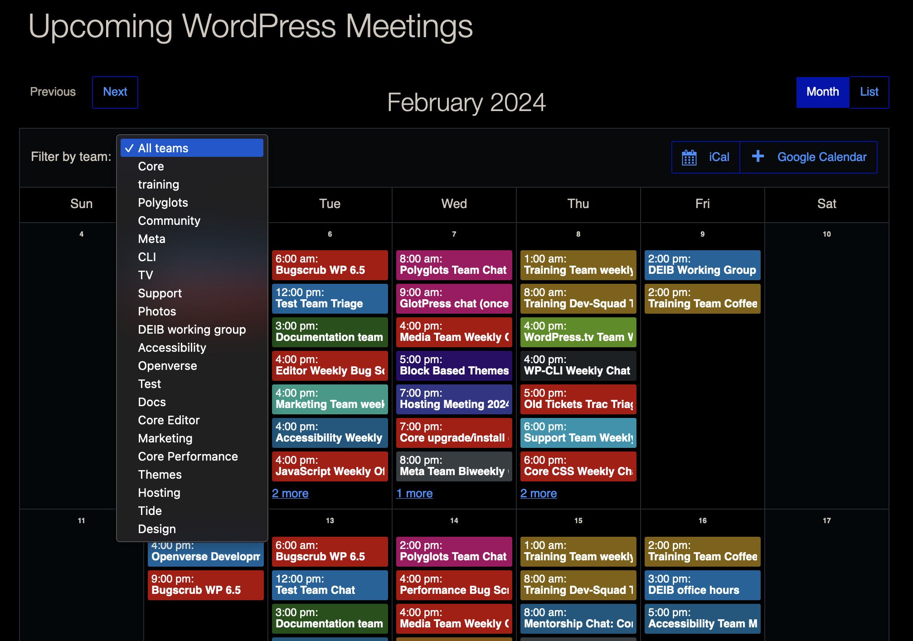
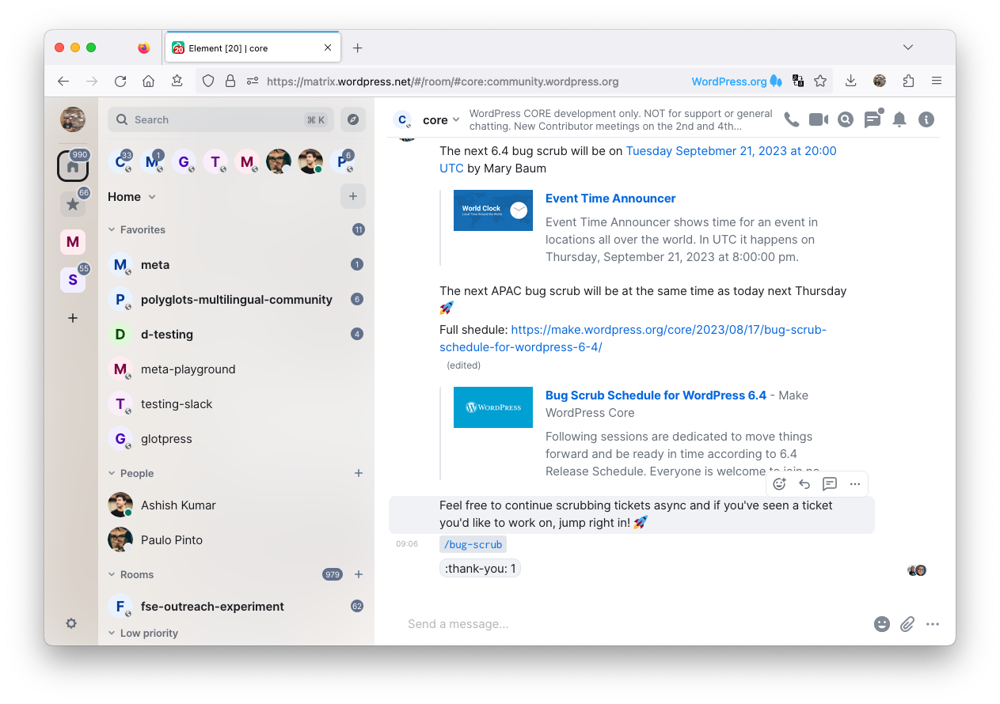
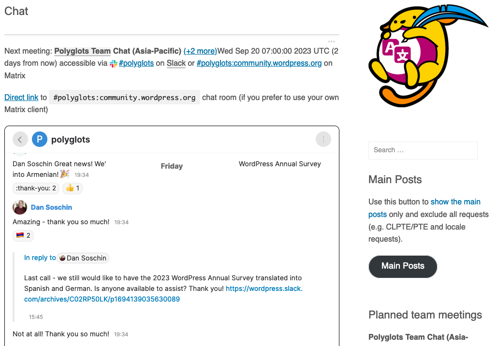
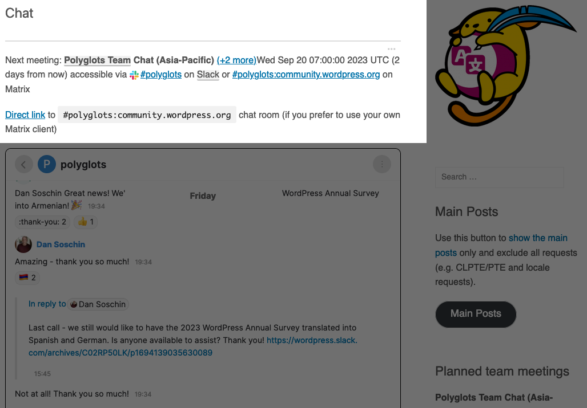
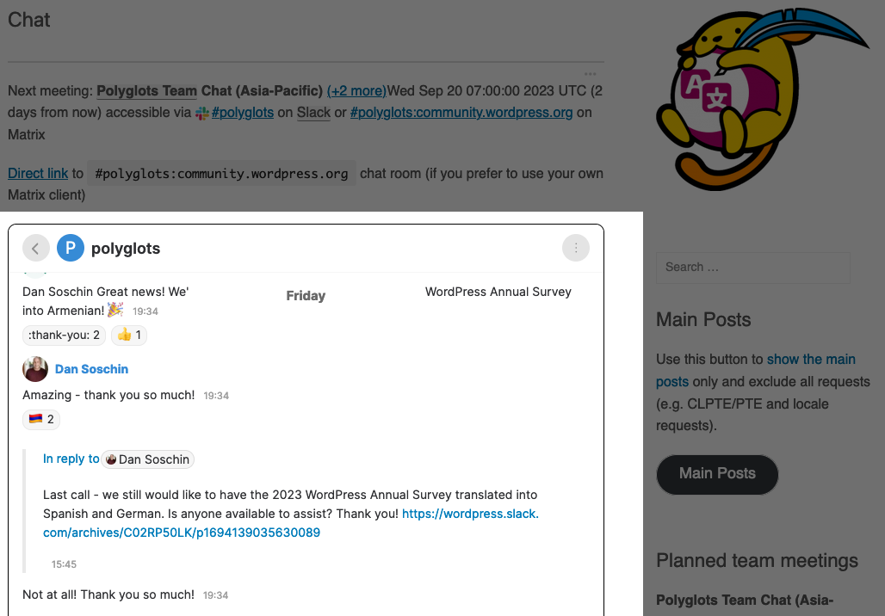

(In the Context of WordPress)
Matrix as an
Alternative to Slack

Alex Kirk
- From Vienna, Austria
- At Automattic (runs WordPress.com & more) since 2014
- Engineer, leading teams around Localization, Playground, Data Liberation & previously, Matrix
- Sponsored to contribute to WordPress.org in Meta and Polyglots
- Sideprojects in the decentralized web space
- Friends Plugin: Make your blog your own hub for subscribing to and interacting with others via RSS, ActivityPub, ...
- Enable Mastodon Apps: Use Ivory, Tusky, ... with your site
Agenda
- Overview of the Chat Systems Slack and Matrix
- Retrospective of the WordPress.org transition to Matrix
- Can Matrix be useful to you?
Slack
- Slack was opened to the public in 2013
- Backronym: "Searchable Log of All Conversation and Knowledge"
- Created for intra-company communication in "workspaces"
- Superior to comparable services with great search and notifications
- You can join a workspace with the associated e-mail host

Slack & WordPress.org
- The WordPress Project originally used IRC for communication (and some Make teams still do)
- In 2014 the project transitioned to Slack, keeping IRC still alive
- Because of Slack's e-mail requirements, signing up is a little complicated → you get a @chat.wordpress.org
- Weekly team chat meetings happen via Slack
- Chat is not for support, please use the forums

Local Slack Communities
- Austria WP Community: austriawpcommunity.slack.com
- Limited by Slack's free plan (90 days message history)
- Tricky to discover, no "local communites Slack" directory
- Who's on which Slack?
matrix.org
Matrix
- Matrix is an open network for secure, decentralized communication
- Uses Federation: No central server, messages are relayed
- Optional end-to-end encryption for rooms
- Bridges, many different clients
- The company Element is the driving force behind 95% of Matrix
- Government use: BwMessenger (deutsche Bundeswehr), Ti-Messenger (Gematik), Tchap (France)
What Makes Matrix Special?

Matrix + WordPress.org = ❤️?
- Open Source Chat for an Open Source Project
- No retention limits
- Free choice of clients
- Unite multiple Slack workspaces (local communities)
Let's See if we can migrate WordPress.org
- January 25, 2023
- Announcement: A Meta subproject for evaluating Matrix
- January to April 2023
- Evaluate and create the Matrix infrastructure
- May to September 2023
- Migrate history and integrations, test with teams
- October to December 2023
- Launch, finalize migrations, turn off Slack
Benefits of Matrix for WordPress.org
- Will unite local communities (no more retention limits)
- We can make it easier to join than Slack
- A bridge can help during the transition (people on Slack can communicate with people and Matrix and vice versa)
- But: A number of Slack features are missing or work differently
Comparing Slack and Matrix
- Both offer a multi-chatroom experience
- Chat functionality is similar: multiple people in a room
- History is persisted across devices
- User has an avatar that can have a profile picture
Slack has (and Matrix not so much)
- Great Room & Notification Management in Slack is superior
- Group rooms in the sidebar, Threads view, Unread View
- Menus per channel
- Reminders and scheduled sending
- Huge number of Slack apps
- Great search with facets: by author, by date, attachments etc.
- Huddles, custom unfurling, custom emojis
- User status with emoji and custom time, custom fields on profiles
- Peek in a room without joining it (e.g. to read a single message)
Matrix has (and Slack not so much)
- Spaces: Visually like Slack workspaces but you can also create your own (private) spaces, rooms can be in multiple spaces
- E2E encryption, in Slack even DMs can be visible to admins
- "Read" indicators
- Widgets can be added to rooms, for example Jitsi for video chat
- A bit of a spam problem in large, open rooms → events can be redacted after the fact
- Chat is a special case for Matrix, it is an eventually consistent distributed JSON store
WordPress.org: Using Slack for a long time
- Lots of integrations have been built:
- Firehose channels (e.g. all new plugins for translators, core commits)
- Trac + Github integration: If you mention a ticket number its Slack conversation gets referenced on Trac
- Some shortcomings of Slack have been fixed with custom code using Slack's API, e.g. getting access to systems related channels
Challenges with Matrix 1/2
- Federation is hard to explain: You need to enter a server URL
- You need your own homeserver, or someone provides it for you
- On the server you have a lot of permissions (e.g. create rooms)
- Encryption can be tricky (both to explain and to handle)
- You need to remember a security key or cross-sync with a client
- Room history on new devices will often only be restored when other participants are online
- Your homeserver needs to keep track of your devices and managing them is challenging
Challenges with Matrix 2/2
- Slow when things get big
- Joining a large room can take minutes
- Client bootup (syncing state from your homeserver to your client) transfers a lot of data and also can take minutes
- Some problems have been known/flagged for years and not addressed (big problem, small team, gatekeeping)
What Makes Building for Matrix Hard?
- Complex Protocols: the Matrix Specification is huge
- Client-Server API, Server-Server API, Application Service API, Identity Service API, Push Gateway API, ...
- Updates to the Spec take quite a while via issues in a Github repo → Often a chicken-and-egg situation
- → You need to use an SDK if you want to build with it
Connecting WordPress and Matrix 1/2
OpenID Connect Server WordPress plugin
- Makes your WordPress an OIDC provider
- → WordPress(.org) users can login with their account
Connecting WordPress and Matrix 2/2
Chatrix: Matrix client in a WordPress block
- Each Chatrix block can be configured individually
- Predefine a home server, optionally restrict to a single room
- People can simply chat on the webpage, you can add information before and after
Team Chat Pages
- Provide a WordPress.org Chat URL → No need to know what Matrix is, how to configure your client, or create a new chat account
- Dedicated pages on the teams' blogs, like:



Creating a new post with a Chatrix block
Making it easier to join Matrix
We host a preconfigured Element Web
Path to migrating WordPress.org
- January 25, 2023
- Announcement: A Meta subproject for evaluating Matrix
- April 17, 2023
- July 28, 2023
- WP Tavern: WordPress Launches Slack/Matrix Bridge
- November 30, 2023
- The migration! Embracing Matrix for Enhanced Communication
Matrix Server
- Synapse
- Slack bridge
- OpenID connect configured
- Migration appservice
- We migrated
- ~ 3 million messages in ~170 rooms
- ~ 45k users
- ~ 55GB database size
How we involved the community
- Communicated often and early
- Weekly meetings to update people on the progress
- Worked in public repositories: github.com/WordPress/Matrix/
- Involved other teams like accessibility: e.g. Matrix test results
- Still a large number of people will be surprised about the news when it's time to migrate
Feedback we anticipated
- Most people don't want to choose clients, they want to go with the standard provided → Element
- Notification Management in Element
- No dedicated threads and mentions view
- Cannot mark message as unread
- Search in Element: No filters, (global) search discoverability
- Other clients miss important features like threads
- All the troubles that come with providing a homeserver for any community member (e.g. unrestricted room creation)
What the WordPress.org Community Found 1/2
github.com/WordPress/Matrix/issues
- Unable to enforce some things like on Slack
- Slack features considered essential
- Pings/Mentions: no @here equivalent, cannot ping groups
- scheduling of messages, reminders
What the WordPress.org Community Found 2/2
github.com/WordPress/Matrix/issues
- Accessibility Problems (e.g. Macro keyboard navigation, Voiceover)
- Bridge glitches (e.g. duplicates, out of order)
- User Experience (e.g. Notification / Threads management, No refinement of searches, Discovery of old messages)
- Matrix glitches (e.g. Failed to load timeline position)
Filling Gaps between Slack and Matrix
- Bots can do a lot, e.g. RSS, Github integration
- Imported Slack history to Matrix
- Created Documentation & Guides to explain differences
- Some things can be improved at the client level, but
- Free client choice is a trap when fixing fundamental problems
- Getting larger patches merged upstream takes lots of time and effort (see my accessibility patches)
Thus:
- December 12, 2023
- What happened??
Turning Off Slack is hard
- Lock-In through apps and habbits
- Companies build Slack apps using internal APIs
→ Cannot be replicated on Matrix easily
- Companies build Slack apps using internal APIs
- Permission system on Slack is not very fine-grained
- You cannot turn off DMs so people might move conversations there
- → All or Nothing
Current Status of Chat on WordPress.org
- Making WordPress remains a Slack community...
- ...but with a Matrix bridge and all Slack history
- New contributors don't need a Slack account
to join chat conversations - Turning off Slack is currently not planned
- WordPress keeps observing how the Matrix project develops
Matrix + WordPress can be ❤️
- Matrix can be integrated well into WordPress (OIDC, Chatrix)
- Easy way (and free) to start a chat community around a project
- The free Matrix.org server can be used, it's possible to move a chat to another homeserver if Matrix.org ever disappears
- Hosting your own (small) Matrix server with Conduit is quite easy
- Many bots are available but hosting them is additional maintenance
Matrix + WordPress.org = (❤️)
- Switching a big and old community is hard. Habbits grow
- There needs to be a benefit and WordPress.org doesn't have message retention problems
- Open Source approach is very different between Matrix and WordPress
- Five for the Future vs. Matrix Membership
- Active Community Participation vs. "Give us Money"
More about Matrix
Summary
- The WordPress community didn't fully migrate in the end
- Maybe things that didn't work for WordPress.org are not relevant for you
- Hopefully this talk could help you identify & decide
- See My FOSDEM 2024 Talk: Migrating the WordPress Community from Slack to Matrix on alex.kirk.at for more details
Thank You!
Questions?
https://alex.kirk.at/wpvie-slack-matrix-2024/
(Lots of links in the slides)